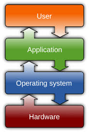

An operating system is software that manages a devices resources. Their primary functions include process management, memory management, and file management, among others.
Source: StatCounter Global Stats - OS Market Share
